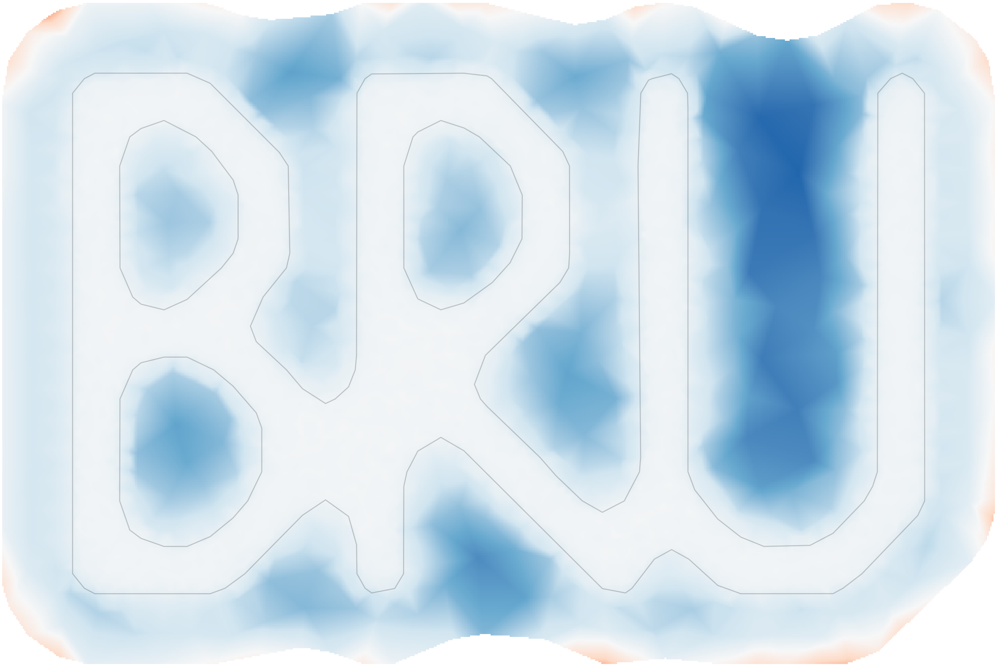
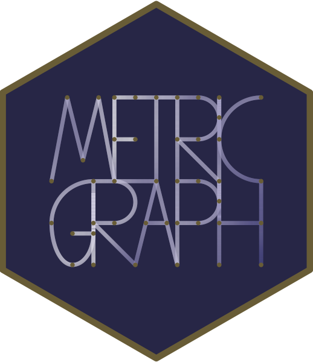

Tutorials
There will be two hands-on tutorials. Please see details below.
inlabru
Description
One of the challenges with spatial and spatio-temporal modelling with latent Gaussian fields is how to translate mathematical models into code and computational package interfaces. Whereas the R-INLA package gives users access to complex modelling and inference, it was clear early on that, in particular, spatial and spatio-temporal latent models, and complex observation models such as point process patterns would benefit from an interface that could automate most of the tedious data wrangling necessary to convert data and models into INLA formats. The inlabru package (https://inlabru-org.github.io/inlabru/) was developed with the goal of facilitating spatial model specification in particular, but has since expanded from the GAM-like model class to more general nonlinear predictor expressions, implements a log Gaussian Cox process likelihood for modelling univariate and spatial point processes.
This tutorial will show how model components are specified with general inputs and mapping methods to the latent variables, and how linear and non-linear model predictors are specified via general R expressions, with separate expressions for each observation likelihood model in multi-likelihood models. In addition, it will demonstrate how to extract the estimation results and perform posterior prediction and plotting. See Fabian E. Bachl, Finn Lindgren, David L. Borchers, and Janine B. Illian (2019), inlabru: an R package for Bayesian spatial modelling from ecological survey data, Methods in Ecology and Evolution, British Ecological Society, 10, 760–766, doi:10.1111/2041-210X.13168, or the most recent manuscript https://arxiv.org/abs/2407.00791(2024).
Packages needed
R (>= 4.4.2), inlabru, INLA (“testing” version), fmesher, sn, sf, terra, tidyterra, INLAspacetime (including their dependencies).
About the instructor: Professor Lindgren’s research focuses on spatial and spatio-temporal stochastic models, environmetrics, and computational methods and software. Among many others, he co-authored the influential paper “An Explicit Link Between Gaussian Fields and Gaussian Markov Random Fields: The Stochastic Partial Differential Equation Approach,” published in the Journal of the Royal Statistical Society: Series B. Professor Lindgren has contributed to the development of several R packages, including INLA for Bayesian latent Gaussian models and inlabru, a user-friendly interface for INLA with additional features.
Statistical modeling on networks using MetricGraph
By David Bolin and Alexandre De Bustamante Simas
Description
There is an increasing interest in geostatistical modeling on metric graphs, such as street or river networks. Motivated by this, the course provides an introduction to statistical modeling on metric graphs using the MetricGraph package in R. Participants will learn the fundamental concepts of metric graphs and how to build metric graphs from various real-world data sources, such as OpenStreetMap, SSN river data, and TomTom traffic data.
In addition to building and manipulating metric graphs, participants will learn how to add and integrate external data into metric graphs and explore data visualization techniques using ggplot2, plotly and leaflet. The course also introduces participants to mixed effects models and log-Gaussian Cox processes on metric graphs, including Gaussian random fields such as the Whittle-Matérn fields, and demonstrates how to fit these models using the MetricGraph package in combination with R-INLA and inlabru.

Packages needed
MetricGraph, inlabru, INLA, leaflet, mapview, viridis, fmesher, sf, rSPDE
About the instructors:
David Bolin is an Associate Professor of Statistics and Affiliate Professor of Applied Mathematics and Computational Sciences at KAUST. Before joining KAUST, he held positions at Chalmers University of Technology and the University of Gothenburg, where he earned the title of Docent in Mathematical Statistics. Bolin’s research focuses on stochastic partial differential equations (PDEs) and their applications in statistics, with an emphasis on developing computationally efficient tools for modeling non-stationary and non-Gaussian processes.
Alexandre B. Simas is a Research Scientist in the Statistics Program at KAUST. Before joining KAUST, he was an Associate Professor at the Federal University of Paraíba in Brazil. His research focuses on stochastic analysis, spatial statistics, and partial differential equations, with a recent emphasis on random fields on metric graphs. Simas has contributed to the development of practical tools, such as the MetricGraph package, co-developed with David Bolin and Jonas Wallin, which connects theoretical foundations with applied statistical modeling on complex spatial structures.